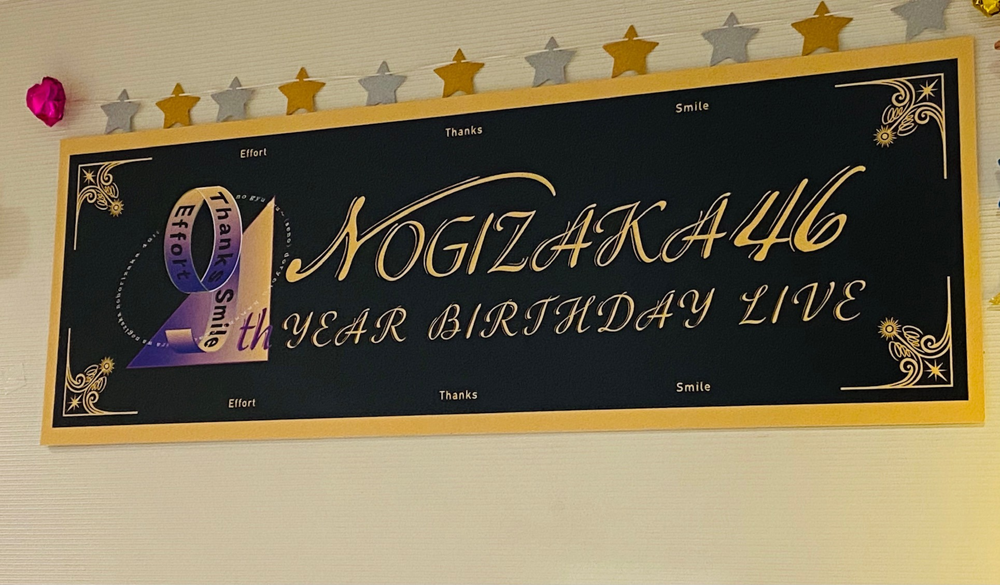
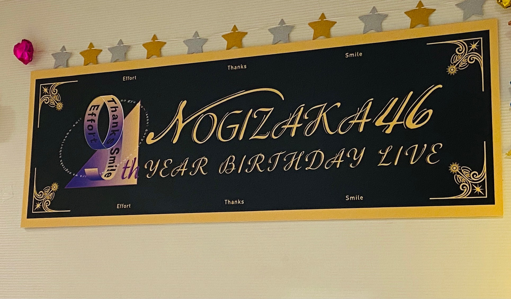

2021/0302Tueランプ
birthdayLive
ありがとうございました。✨
1年って長いような短いような
去年の事今でも鮮明に覚えています。
大変だったこと
嬉しかったことも
くだらないメンバー同士の会話も
前夜祭で秘蔵映像など観ながら
しっかり振り返ってもらった時
当時は長丁場のLiveと言うこともあり
覚えることの膨大さ
初めての経験も多くその分不安もあったり
体力面でも持つのかなーとか
とにかく不安なことの方が多かったのですが
振り返ってみると
あの場に入れたことの素晴らしさや
本当にいい経験だったと
今までも噛み締めていたつもりではありましたが
より気づけました。
しかも、あんなに映像も残っている事も
恥ずかしいけど幸せ者だと感じました。
本当にありがとうございました。☺️
改めて乃木坂46を宜しくお願い致します。✨
乃木坂お試し中
ありがとうございました。
まさかの台本に書いてあって知ったのですが
その名の通り本当に何も決まっていないらしく
普通ならあり得ないことかもしれませんが
私自身しっかり作り上げられ決められた環境よりも
自分達で意見して作り上げる
ものづくりなど
そう言う環境の方がすごくワクワクする性格なので
メンバーの個性をもっと活かしたり
自由度の高い楽しい時間になればいいなーと
ミーグリも本当にありがとうございました。✨
他にも書くことがある気もしましたが
ひとまず。！！
 

コメント(379)
この前のミーグリ楽しかったよ！
おつかれさまでした(^^)
なんだろ
蘭世さんまた一段と大きく見えました！
あ、ステージ映えの話よ！
早く生のステージで見たいですなぁ(^^)
乃木坂お試し中☆
すんごい楽しいです！！
新感覚というかずっと面白い！
色んな人の目にとまるといいなぁ(^^)
ずっと
蘭世の大切な場所であってほしい(^^)
バスラ前夜祭と当日お疲れ様でした〜
乃木坂お試し中もお疲れ様〜
今度の2期生ライブ楽しみにしてるね！
あと、モバメで言ってたオススメの曲何曲かくね！
BACK-ONってグループの曲全体的におすすめ！特にリザレクションってのが1番かな！あと、アニメのエウレカセブンのDaysって曲とか、Super Beaverさんのらしさとかいいよ！
あとは、オリラジさんたちの曲もよく聞くよ〜
BirthdayLIVEお疲れ様！
最高のLIVEだったよ！
10年目も頑張ってね！
今後のブログも楽しみに待ってるよ！
体調には気をつけてね！
応援してるよ！
大好きだよ♡
ホントに1年って短いよね。
そう感じるってことは、
毎日楽しいってことだよね！
バスラお疲れ様！！
お試し中面白かった！
これからも楽しくみさせてもらいます！！
蘭世らしく頑張ってください！！
二期生ライブのセトリ自分で予想しながら二期生ライブの日まで楽しみに待ってます！二期生ライブも頑張ってね！
そしてお試し中お疲れ様！蘭世らしく本当に良かった！
鈴木さんとの相性もすごく良くて本当に面白かったです！
次回のお試し中も楽しみにしてます！
蘭世大好き！
バースデーライブ仕事で見れなくて残念でした。らんぜのツインが1番好きなので見たかった お試し中も自分の家で映らないんだけど友達の家で見せてもらったよー！めっちゃよかったー！本当に台本に何も書いてないんだね！wらんぜの初MCめちゃめちゃよかった！！また次回も楽しみにしてるよー！27日のミーグリもありがとうー！仕事で5部しか行けなかったけどいっぱいお話しできて嬉しかった！！！もー後2回しかミーグリ行けないけどいっぱいお話しできることと蘭世に会えることを楽しみにそしてそれをモチベーションにして仕事頑張ります！！最近暖かくなってきたけど体調には気をつけて頑張ってください！応援してます
ブログありがとうございます
2期生ライブとっても楽しみにしています
そして、ブログ更新ありがとー
前夜祭、バースデライブお疲れ様です(*^▽^*)
２日間見させてもらったよ✨アフター配信もね(笑)
１年って早く感じるね♪
今回のバスラは期別が印象に残ってるかなぁ～
あと、「ゆっくりと咲く花」めっちゃ感動(泣)
乃木坂お試し中のMC頑張ってね♪応援してるね☆☆
今月の28日２期生ライブが楽しみすぎる！
未央奈のラストライブだね♪ 悲しい～( o´ｪ｀o)
でも、いいライブにしようね♪ 絶対に見るからね～
体調に気を付けて頑張ってね！
birthday Liveお疲れ様でした！
蘭世に会いたくなったよー
それくらい可愛かった！かっこよかった！
お試し中もよかったー！
これからも蘭世らしく頑張って！
最後の蘭世飛べそう
乃木坂お試し中なんて略します？
教えて〜
次回も期待してます！
残りのミーグリもよろしくお願いしますm(__)m
大好き！！
毎週やって欲しい
2期生ライブ凄く楽しみです！
お試し中良かったよ！間違いなく今までにない
MCだったし、拓さんとの相性もバッチシで
これからとっても楽しみです！
幸せを届けてくれて本当にありがとう！
最近ね、昼ごはんに厚揚げで一品作ったんだけど、母に味付けが良いねと言ってもらえました。!!
誰かに美味しいって言ってもらうと気持ちがホッコリするね。
改めまして乃木坂46CDデビュー9周年おめでとうございます。
そして今月末には二期生ライブが開催されるね。
昨年に引き続きリモート開催だけど、いつか生で二期生ライブが開催されることを祈ってます。
やっぱり会場で声出してメンバーやファンの人たちと同じ空気、熱量を共有したいです。
今年一年もよろしくお願いいたします.
これからも大切な思い出を一緒に作りましょう。
乃木坂お試し中,楽しかったです。
蘭世のおかげで楽しい一週間になりました。
ブログありがとう
改めまして、乃木坂9歳おめでとうございます。(*’ω’ﾉﾉﾞ☆ﾊﾟﾁﾊﾟﾁ
10年目を迎えた乃木坂での蘭世さんの活躍を楽しみにしていますね。
『乃木坂お試し中』蘭世さんにしか作れない番組にしていってくださいね。
それでは、また何かあったらコメントさせていただきますね。m(_ _)m
毎年バスラでハーフツインやってくれるの本当に嬉しいしいつも楽しみにしてます！！！
インスタの更新もモバメもたくさん更新してくれてありがとう！！
なかなか会える機会がないけど寂しくならなくて嬉しいです！！！
バスラ見たよ、次のミーグリで感想伝えます。
2期ライブも今からすごく楽しみだよ。
やぁ
メールありがとう！(*´▽｀*)
お！これまた綺麗やな。
この表情いよな(*´з`)
ありゃ！それは珍しいな。
何でもええんやで笑
たわいもない話でも昨日何食べたとか、今こう言うの好きなんですとか。
そういう会話も大切やしな( *´艸｀)
俺は今帰ってきてブログを読んでコメントしようと思ってる笑
その前にメールのお返事笑笑
もう上がってたな～笑
いまから読んでコメントするで～(^^)/
きっとまた後で(^o^)／
バスラお疲れ様でした︎☺︎
めちゃめちゃかわいいです。これからも応援してます！！笑
特に、2期生楽曲は全て良かったです！
ミーグリもすごく楽しい時間を過ごせて幸せでした！
気温の変化に気をつけて、体調崩さないように気をつけて、頑張って下さい！
ライブお疲れ様でした
MCも、お疲れ
みんなで楽しんでね
もう、３月ですね
早いなぁ～
暖かくなって気が緩みそうですが
でも、
引き締めて行きしょう
バースデーライブ前夜祭を含め、2日間お疲れ様でした！
配信の形でしたが、パフォーマンスの熱が伝わってきて最高のライブでした！何度目の青空かでの蘭世さんの輝き、2期生パートでの2期生の結束力、アンダー曲パートでのパフォーマンスの強さなど見所たくさんで、メンバー間の楽しそうなわちゃわちゃも最高でした！
バスラ恒例のハーフツイン蘭世さん、やっぱ似合います！
前夜祭では、昇格の瞬間やボーダー披露、サンクエトワールでの披露と感動の連続。
アフター配信でのイントロクイズも盛り上がって、最後の方はイントロが一瞬でしたね笑
8thバスラからあっという間に1年、初めて愛知県に行きバスラを見に行ったのがもう1年前と考えるとかなり早く感じます。
乃木坂お試し中見ましたよ！MC姿が輝いていて、これからどのような展開になっていくかワクワクしています！鈴木拓さんとのコンビも楽しみです！
3月28日の2期生ライブ、2期生の記念すべき日のライブすごく楽しみです！メンバーが1から作り上げるライブということで、バスラと同じように配信ですが、熱をたくさん応援します！
そして体調に気をつけて、元気にいきましょう！
更新ありがとう!
バスラお疲れ様です！前夜祭、バスラ楽しませていただきました！
番組内容が何も決まってない中でのMCは大変だと思いますが頑張ってください！
バスラ、前夜祭お疲れ様!
良きでしたよ、インフルエンサーとかかっこよかったし
期別のとこも良きでしたよ
可愛かったよ
蘭世にしか目が行かなかったw
乃木坂イントロクイズも良きでした
面白くてまたやってほしいね
ミーグリも毎回ありがとう!
そろそろ名前覚えてくれたかな？
また再来週かな？よろしくね
期別のライブも楽しみ
未央奈の最後のライブだから盛大に盛り上げたいね
やっぱ2期生好きだわ
10年目も蘭世よろしくです！
ひょろひょろくんもよろしくです
9th YEAR BIRTHDAY LIVEにお試し中お疲れさまでした。
2月はバタバタとしたんじゃないでしょうか、そりゃもう3月って感じですよね。
お試し中が月1なのが勿体ないなぁ～って思いつつ、蘭世ぴんパワーで
凝縮してＭＣはっちゃけてほしいなって。
最近、仕事で撮影していた写真を探すことがあってパソコンを検索していたら
昔の写真とか懐かしくて、あぁこんなこともあったな・大変だったなぁって
懐かしく思うこともあって・・・・で何探すんだっけ？ってなったり。
そうそう、パソコンあると便利ですよ。
蘭世ぴんの何かとブレる（失礼!!）スマホがiPhoneならアップル、Androidなら
アップル、Windowsどちらでもいいと思いますが、最近は小型軽量のものもあるし
何と言ってもキーボードは便利ってか早い!!
私は外に出ていない限りranzemailもTwitter、LINE、インスタそしてもちろん
このコメントも全部パソコンからです、是非是非、パソコンデビューしてください。
バスラお疲れさま！ たくさん蘭世のこと見つけれました☺
これからも体調に気をつけて無茶せずがんばってね！
バスラ最高でした！
２期生ライブももう待ちきれないです！笑
楽しみにしてましたよー。
前にもコメントさせていただきましたが、バスラ本当に最高でした！素晴らしいものを見させてもらいました。ありがとうございます。
乃木坂お試し中これからどんな企画をやってどんな番組になっていくのか楽しみです！今月の放送が待ち遠しいです！MCこれからも頑張ってください！毎回欠かさず見ます！
ミーグリはこれまで二日間参加させてもらいました。短い時間でしたが、毎回毎回蘭世さんと話すのが本当に楽しいです！次に参加するのは最後のミーグリの日です。それまで楽しみでしかありません。まっててくださいね！その時はよろしくお願いします！
今月末は2期ライブですね。そして、未央奈さんとの最後のライブですね。最高の形で送ってあげてください！配信となってしまうのは残念ですが、今回も画面の前から応援したいとおもいます。
またコメントしたいと思います。
これからも体調に気をつけてお仕事頑張ってください！
花粉症辛い時期ですが一緒に乗り越えましょう。
バスラとにかく最高に楽しかった
こらからも本当にいろいろ楽しみ
やぁ！
ブログ更新ありがとう！(*´▽｀*)
birthdayLiveお疲れ様！
そして楽しい時間をありがとう！
いい思い出は沢山作れたかな？
一年はホンマ早いよな。
時間を沢山共有する人が近くにいるとそれだけ思い出は鮮明に残ってると俺は思う(´ー｀)
前夜祭も良かったな。
たまには振り返ってみるのもいいよな。
蘭世
まだ入ってそんな時間も経ってないであろう十代前半の子が大変な経験をするってすごく不安だっただろうなって思ったり。
だけど、時が経って自分も大人になるにつれて当時の経験が凄く良いものだって感じるだろうししてて良かったなって思うと思う。
あはは。
確かに蘭世
それも有難い事やね。
多分蘭世
こちらこそありがとうね。
お試し中も凄く面白かったわ(´▽｀)
マジか笑笑
地上波だとありえないかもな…(^▽^;)
スタッフや脚本家が作り上げるんやなくてメンバーの事を知ってる蘭世
その方が絶対面白いと思うしな。
ミーグリも楽しめたようで良かった。
またブログ更新楽しみにしてるで。
自分のペースでええからな～(^^)/
集合写真ていいよな。歴史をすごく感じる。
か～また可愛い写真を！！
てか蘭世
可愛いで。
あ、一個前にもメールの返事とか書いてるから反映されたらまた読んだってな。
きっとまた後で(｡･ω･)ﾉ
バスラお疲れ様でした、そして二期生ライブ楽しみます。
お試し中でMCの姿を見てめちゃ嬉しかった。来月も楽しみます。
ミーグリで話を聞いてくれて本当にありがとうございました。再来週のミーグリまたね。
バスラも番組もお疲れ様です☀︎
MC就任のリアクション可愛すぎたよ、今後も蘭世らしく頑張ってください！
暫く会えていませんがずっと応援しています
心の拠り所です！だいすきです´`*
ひとまずバスラお疲れ様！
前夜祭から見てたけど本当に乃木坂っていいチーム
みんな仲良しだけどちゃんと叱ってくれるときは叱ってくれる
そんな仲間は一緒ものだね
そしてそしてお試し中！
最高だったよー
鈴木さんやスタッフさんとは少し仲良くなれたかな？
次回が楽しみー
めざせ！マツコDXさん！！
前夜祭、バスラお疲れ様でした。アフター配信まで全部観ました。
とても楽しかったし、配信ならではの映像とリンクさせたライブを観て、感動しました。リハ大変だったとは思いますが、とても良かったです
今月末にある2期生ライブ、必ず観ます。どんな演出で何の曲を披露するのか楽しみですし、未央奈ちゃんラストライブを精一杯やりきって、2期生の絆や強さを沢山の方にみせつけてください
では、体調に気をつけて
バースデーライブ、お疲れ様でした。前夜祭みたいのも良いなと思います。
自分はもう歳なので、細かいところまでは覚えてなくて、楽しかった！とか、変な匂いがした！とか、痛い思いをした！とか本当に強く残った物しか覚えられないんですよね。それでいて撮影する習慣もないので、記録もないし目で見たものをフィルム出来ないかなんて思う事もあります。沢山映像残して下さいね。
乃木坂お試し中は残念ながら見れないのですが、楽しくされていればと思います。
おやすみ
サンエトへの思いの深さが伺えました。
幸せな時間でした。
途中切れで言えなかったことをいくつか。
まずはバスラの感想の続き。
『アナスターシア』『ゆっくりと咲く花』が聴けて嬉しかった！
ゆっくりと咲く花の最後､堀さんのお尻触った寺田さんが可愛いかった！
全体を通して５回､うるっと来た！
それから、伝えたかったのに伝えられなかった言葉。
お試し中のMC､おめでとう 。
蘭世の知らない世界も始まるといいな。笑


大好きです。